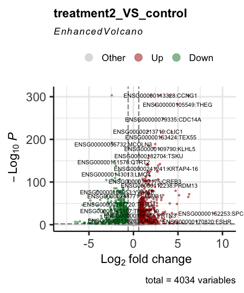
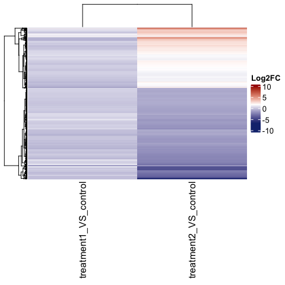
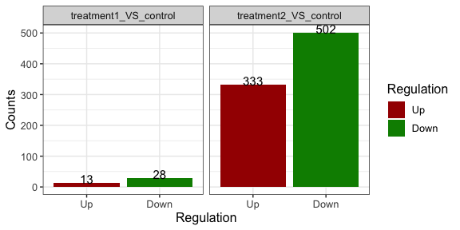

The goal of parcutils is to provide day to day bioinformatics utility functions. Most of the functions in the package are useful for analyzing and visualizing complex RNA-seq studies.
Installation
if(require("devtools") && require("BiocManager")){
options(repos = BiocManager::repositories() )
devtools::install_github("cparsania/parcutils")
} else{
install.packages(c("devtools","BiocManager"))
options(repos = BiocManager::repositories() )
devtools::install_github("cparsania/parcutils")
}RNA-seq analysis
Differential expression analysis
Prepare a count table
count_file <- system.file("extdata","toy_counts.txt" , package = "parcutils")
count_data <- readr::read_delim(count_file, delim = "\t")
count_data %>% head() %>% print()
#> # A tibble: 6 × 10
#> gene_id control_rep1 control_rep2 control_rep3 treat1_rep1 treat1_rep2
#> <chr> <dbl> <dbl> <dbl> <dbl> <dbl>
#> 1 ENSG0000017359… 0 0 0 0 0
#> 2 ENSG0000010634… 1 0 2 0 0
#> 3 ENSG0000013112… 2 0 2 0 0
#> 4 ENSG0000015434… 652 690 639 607 453
#> 5 ENSG0000019641… 3372 3631 3188 4644 3168
#> 6 ENSG0000017302… 694 784 829 974 580
#> # … with 4 more variables: treat1_rep3 <dbl>, treat2_rep1 <dbl>,
#> # treat2_rep2 <dbl>, treat2_rep3 <dbl>Group replicates by samples.
sample_info <- count_data %>% colnames() %>% .[-1] %>%
tibble::tibble(samples = . , groups = rep(c("control" ,"treatment1" , "treatment2") ,
each = 3))
print(sample_info)
#> # A tibble: 9 × 2
#> samples groups
#> <chr> <chr>
#> 1 control_rep1 control
#> 2 control_rep2 control
#> 3 control_rep3 control
#> 4 treat1_rep1 treatment1
#> 5 treat1_rep2 treatment1
#> 6 treat1_rep3 treatment1
#> 7 treat2_rep1 treatment2
#> 8 treat2_rep2 treatment2
#> 9 treat2_rep3 treatment2Run DESeq2 for multiple differential gene comparison.
res <- parcutils::run_deseq_analysis(counts = count_data ,
sample_info = sample_info,
column_geneid = "gene_id" ,
log2fc_cutoff = 0.6,
cutoff_pval = 0.05,
group_numerator = c("treatment1", "treatment2") ,
group_denominator = c("control"),
column_samples = c("control_rep1", "treat1_rep1", "treat2_rep1", "control_rep2", "treat1_rep2", "treat2_rep2", "control_rep3", "treat1_rep3", "treat2_rep3"))Let’s have a look in to res
print(res)
#> # A tibble: 2 × 8
#> comp numerator denominator norm_counts dsr dsr_tibble dsr_tibble_deg
#> <chr> <chr> <chr> <named lis> <nam> <named li> <named list>
#> 1 treatment1_VS_control treatmen… control <named lis… <DES… <tibble [… <tibble [4,03…
#> 2 treatment2_VS_control treatmen… control <named lis… <DES… <tibble [… <tibble [4,03…
#> # … with 1 more variable: deg_summmary <named list>res is an object of improved dataframe - tibble. Each row in the res is a differential comparison which can be identified by the value from the column comp.
print(res$comp)
#> [1] "treatment1_VS_control" "treatment2_VS_control"Data related to each differential comparison can be found from other columns of res.
For example, summary of differently expressed genes can be find from the column deg_summmary
print(res$dsr_tibble_deg)
#> $treatment1_VS_control
#> # A tibble: 4,034 × 9
#> gene_id baseMean log2FoldChange lfcSE stat pvalue padj signif regul
#> <chr> <dbl> <dbl> <dbl> <dbl> <dbl> <dbl> <chr> <chr>
#> 1 ENSG000… 716. -0.601 0.0932 -6.45 1.09e-10 6.58e-9 p-val… other
#> 2 ENSG000… 4243. -0.0714 0.0748 -0.954 3.40e- 1 5.52e-1 NS other
#> 3 ENSG000… 672. -0.256 0.114 -2.25 2.47e- 2 9.02e-2 p-val… other
#> 4 ENSG000… 80.7 -0.176 0.204 -0.865 3.87e- 1 5.93e-1 NS other
#> 5 ENSG000… 1279. -0.138 0.179 -0.771 4.41e- 1 6.38e-1 NS other
#> 6 ENSG000… 4072. -0.359 0.181 -1.99 4.69e- 2 1.44e-1 p-val… other
#> 7 ENSG000… 13435. -0.0627 0.0989 -0.634 5.26e- 1 7.11e-1 NS other
#> 8 ENSG000… 529. -0.326 0.111 -2.93 3.36e- 3 2.01e-2 p-val… other
#> 9 ENSG000… 2.38 -2.21 1.40 -1.58 1.14e- 1 NA log2FC other
#> 10 ENSG000… 7.51 -0.698 0.672 -1.04 2.99e- 1 NA NS other
#> # … with 4,024 more rows
#>
#> $treatment2_VS_control
#> # A tibble: 4,034 × 9
#> gene_id baseMean log2FoldChange lfcSE stat pvalue padj signif regul
#> <chr> <dbl> <dbl> <dbl> <dbl> <dbl> <dbl> <chr> <chr>
#> 1 ENSG00… 716. 0.557 0.0896 6.22 4.98e-10 1.56e- 9 p-val… other
#> 2 ENSG00… 4243. 0.729 0.0744 9.79 1.22e-22 8.13e-22 p-val… other
#> 3 ENSG00… 672. -0.542 0.116 -4.69 2.77e- 6 6.30e- 6 p-val… other
#> 4 ENSG00… 80.7 0.0145 0.205 0.0710 9.43e- 1 9.52e- 1 NS other
#> 5 ENSG00… 1279. -1.18 0.180 -6.56 5.47e-11 1.84e-10 p-val… Down
#> 6 ENSG00… 4072. 0.193 0.181 1.07 2.86e- 1 3.32e- 1 NS other
#> 7 ENSG00… 13435. 0.0257 0.0990 0.260 7.95e- 1 8.21e- 1 NS other
#> 8 ENSG00… 529. 0.00983 0.111 0.0890 9.29e- 1 9.40e- 1 NS other
#> 9 ENSG00… 2.38 -1.31 1.31 -1.00 3.17e- 1 3.65e- 1 log2FC other
#> 10 ENSG00… 7.51 -1.39 0.731 -1.90 5.69e- 2 7.65e- 2 log2FC other
#> # … with 4,024 more rowsAs described below, there are several helper functions to get data from the res .
Get data from res using helper functions
# get normalised gene expression value for all genes across all samples.
parcutils::get_normalised_expression_matrix(x = res,
samples = NULL,
genes = NULL,
summarise_replicates = FALSE)
#> # A tibble: 4,034 × 10
#> gene_id treat1_rep1 treat1_rep2 treat1_rep3 control_rep1 control_rep2
#> <chr> <dbl> <dbl> <dbl> <dbl> <dbl>
#> 1 ENSG0000015434… 440. 461. 456. 694. 687.
#> 2 ENSG0000019641… 3370. 3222. 3478. 3591. 3616.
#> 3 ENSG0000017302… 707. 590. 709. 739. 781.
#> 4 ENSG0000014059… 72.6 78.3 71.3 92.7 72.7
#> 5 ENSG0000013926… 1403. 1484. 1568. 1463. 1781.
#> 6 ENSG0000016589… 2815. 3559. 3404. 3875. 4514.
#> 7 ENSG0000017945… 12679. 12542. 13690. 13257. 13358.
#> 8 ENSG0000018886… 461. 434. 459. 540. 592.
#> 9 ENSG0000024915… 0 2.03 0.990 0 11.0
#> 10 ENSG0000011085… 2.18 9.15 9.90 11.7 5.97
#> # … with 4,024 more rows, and 4 more variables: control_rep3 <dbl>,
#> # treat2_rep1 <dbl>, treat2_rep2 <dbl>, treat2_rep3 <dbl>
# average gene expression values across relicates
parcutils::get_normalised_expression_matrix(x = res,
samples = NULL,
genes = NULL,
summarise_replicates = T,
summarise_method = "median")
#> # A tibble: 4,034 × 4
#> gene_id control treatment1 treatment2
#> <chr> <dbl> <dbl> <dbl>
#> 1 ENSG00000000971:CFH 7349. 5727. 9849.
#> 2 ENSG00000001461:NIPAL3 134. 126. 68.2
#> 3 ENSG00000001497:LAS1L 9282. 8228. 7678.
#> 4 ENSG00000001631:KRIT1 23294. 29183. 20375.
#> 5 ENSG00000002746:HECW1 66.0 31.9 24.9
#> 6 ENSG00000003056:M6PR 6538. 7394. 6694.
#> 7 ENSG00000003436:TFPI 248. 225. 200.
#> 8 ENSG00000003509:NDUFAF7 462. 495. 384.
#> 9 ENSG00000004766:VPS50 40.2 38.6 121.
#> 10 ENSG00000004864:SLC25A13 370. 396. 844.
#> # … with 4,024 more rows
# get fold change values for all genes and all comparisons.
q_genes = c("ENSG00000196415:PRTN3", "ENSG00000221988:PPT2", "ENSG00000163138:PACRGL", "ENSG00000183840:GPR39", "ENSG00000146700:SSC4D", "ENSG00000163746:PLSCR2", "ENSG00000155918:RAET1L", "ENSG00000151458:ANKRD50", "ENSG00000167074:TEF", "ENSG00000130159:ECSIT")
parcutils::get_fold_change_matrix(x = res, sample_comparisons = res$comp,
genes = q_genes)
#> # A tibble: 10 × 3
#> gene_id treatment1_VS_control treatment2_VS_control
#> <chr> <dbl> <dbl>
#> 1 ENSG00000196415:PRTN3 -0.0714 0.729
#> 2 ENSG00000221988:PPT2 0.0769 0.699
#> 3 ENSG00000163138:PACRGL 0.173 0.691
#> 4 ENSG00000183840:GPR39 0.170 0.904
#> 5 ENSG00000146700:SSC4D 0.0793 0.773
#> 6 ENSG00000163746:PLSCR2 0.0321 0.747
#> 7 ENSG00000155918:RAET1L 0.467 2.63
#> 8 ENSG00000151458:ANKRD50 -0.0441 1.91
#> 9 ENSG00000167074:TEF -0.0815 0.681
#> 10 ENSG00000130159:ECSIT 0.0317 0.751
# get differentially expressed genes for given comparison
parcutils::get_genes_by_regulation(x = res,
sample_comparison = "treatment1_VS_control",
regulation = "both" # can be one of the "up" , "down" , "both", "other", "all"
)
#> up up
#> "ENSG00000187193:MT1X" "ENSG00000269533:AC003002.3"
#> up up
#> "ENSG00000065427:KARS1" "ENSG00000007171:NOS2"
#> up up
#> "ENSG00000285447:ZNF883" "ENSG00000111275:ALDH2"
#> up up
#> "ENSG00000279111:OR10X1" "ENSG00000167617:CDC42EP5"
#> up up
#> "ENSG00000186566:GPATCH8" "ENSG00000232423:PRAMEF6"
#> up up
#> "ENSG00000182103:FAM181B" "ENSG00000172500:FIBP"
#> up down
#> "ENSG00000151033:LYZL2" "ENSG00000250305:TRMT9B"
#> down down
#> "ENSG00000134308:YWHAQ" "ENSG00000123575:FAM199X"
#> down down
#> "ENSG00000148482:SLC39A12" "ENSG00000175264:CHST1"
#> down down
#> "ENSG00000141933:TPGS1" "ENSG00000165621:OXGR1"
#> down down
#> "ENSG00000104081:BMF" "ENSG00000278023:RDM1"
#> down down
#> "ENSG00000172264:MACROD2" "ENSG00000162971:TYW5"
#> down down
#> "ENSG00000198682:PAPSS2" "ENSG00000125445:MRPS7"
#> down down
#> "ENSG00000138670:RASGEF1B" "ENSG00000124839:RAB17"
#> down down
#> "ENSG00000069869:NEDD4" "ENSG00000174576:NPAS4"
#> down down
#> "ENSG00000143514:TP53BP2" "ENSG00000181009:OR52N5"
#> down down
#> "ENSG00000257315:ZBED6" "ENSG00000141748:ARL5C"
#> down down
#> "ENSG00000198886:MT-ND4" "ENSG00000157045:NTAN1"
#> down down
#> "ENSG00000165131:LLCFC1" "ENSG00000277611:Z98752.3"
#> down down
#> "ENSG00000158089:GALNT14" "ENSG00000124784:RIOK1"
#> down
#> "ENSG00000103197:TSC2"
# get replicates group data
parcutils::group_replicates_by_sample(res)
#> # A tibble: 9 × 2
#> groups samples
#> <chr> <chr>
#> 1 treatment1 treat1_rep1
#> 2 treatment1 treat1_rep2
#> 3 treatment1 treat1_rep3
#> 4 control control_rep1
#> 5 control control_rep2
#> 6 control control_rep3
#> 7 treatment2 treat2_rep1
#> 8 treatment2 treat2_rep2
#> 9 treatment2 treat2_rep3Generate several visualizations from res
Visualize pairwise correlation between replicates
parcutils::get_pairwise_corr_plot(res, samples =c("control" ,"treatment1"))
#> Registered S3 method overwritten by 'GGally':
#> method from
#> +.gg ggplot2
#> $control#>
#> $treatment1
Visualize samples by Principle Component Analysis (PCA)
parcutils::get_pca_plot(x = res,
samples =c("control" ,"treatment1" ,"treatment2"))Visualize gene expression distribution using box plot
# all replicates
parcutils::get_gene_expression_box_plot(x = res,
samples =c("control" ,"treatment1"),
group_replicates = FALSE,
convert_log2 = T)
# summarise replicates
parcutils::get_gene_expression_box_plot(x = res,
samples =c("control" ,"treatment1"),
group_replicates = T,
convert_log2 = T)
Visualize genes by heatmaps
genes_for_hm = parcutils::get_genes_by_regulation(x = res,
sample_comparison = res$comp[[2]],
regulation = "both")
# heatmap of normalised gene expression values across samples
hm1 <- parcutils::get_gene_expression_heatmap(x = res,
samples = c("control","treatment1" , "treatment2") ,
genes = genes_for_hm ,
convert_zscore = FALSE,
convert_log2 = T,
summarise_replicates = T,
name = "log2(value)" ,
cluster_columns = FALSE)
ComplexHeatmap::draw(hm1)
# Visualise z-score and show all replicates.
hm2 <- parcutils::get_gene_expression_heatmap(x = res,
samples = c("control","treatment1") ,
name = "Z-score",
summarise_replicates = F,
genes = genes_for_hm ,
convert_zscore = TRUE,
cluster_columns = FALSE)
#> Warning in parcutils::get_gene_expression_heatmap(x =
#> res, samples = c("control", : Genes having value NA -
#> ENSG00000170820:FSHR,ENSG00000129862:VCY1B are removed from heatmap.
ComplexHeatmap::draw(hm2)
# log2 FC heatamap
hm3 <- parcutils::get_fold_change_heatmap(x = res,
sample_comparisons = res$comp,
genes = genes_for_hm ,
name= "Log2FC")
ComplexHeatmap::draw(hm3)
Visualize differential genes overlap between comparison
us_plot <- parcutils::plot_deg_upsets(x = res, sample_comparisons = res$comp)
us_plot$treatment1_VS_control_AND_treatment2_VS_control$upset_plot %>% print()
# get list of intersecting genes.
us_plot$treatment1_VS_control_AND_treatment2_VS_control$upset_intersects %>% print()
#> # A tibble: 7 × 2
#> set elements
#> <chr> <list>
#> 1 treatment1_VS_control_up <chr [6]>
#> 2 treatment1_VS_control_up,treatment2_VS_control_up <chr [7]>
#> 3 treatment2_VS_control_up <chr [318]>
#> 4 treatment2_VS_control_up,treatment1_VS_control_down <chr [8]>
#> 5 treatment1_VS_control_down,treatment2_VS_control_down <chr [7]>
#> 6 treatment1_VS_control_down <chr [13]>
#> 7 treatment2_VS_control_down <chr [495]>Other functions
Alignment summary
star_align_log_file <- system.file("extdata" , "toy_star_align_Log.final.out" , package = "parcutils")
x = parcutils::get_star_align_log_summary(log_file = star_align_log_file)
print(x)
#> # A tibble: 13 × 2
#> type val
#> <chr> <chr>
#> 1 Number of input reads 41936201
#> 2 Uniquely mapped reads number 40090105
#> 3 Uniquely mapped reads % 95.60%
#> 4 Average input read length 300
#> 5 Average mapped length 298.24
#> 6 Number of reads mapped to multiple loci 900879
#> 7 % of reads mapped to multiple loci 2.15%
#> 8 Number of reads mapped to too many loci 9335
#> 9 % of reads mapped to too many loci 0.02%
#> 10 Number of reads unmapped: too short 921464
#> 11 % of reads unmapped: too short 2.20%
#> 12 Number of reads unmapped: other 14418
#> 13 % of reads unmapped: other 0.03%